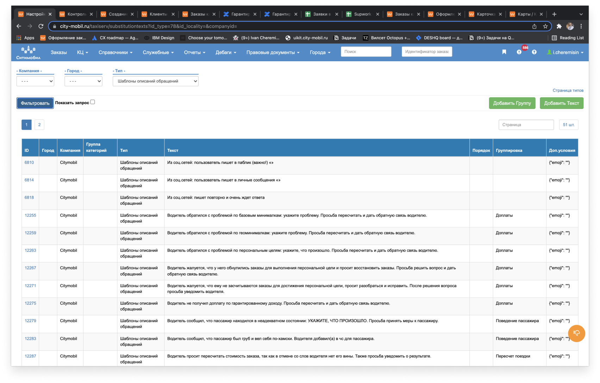
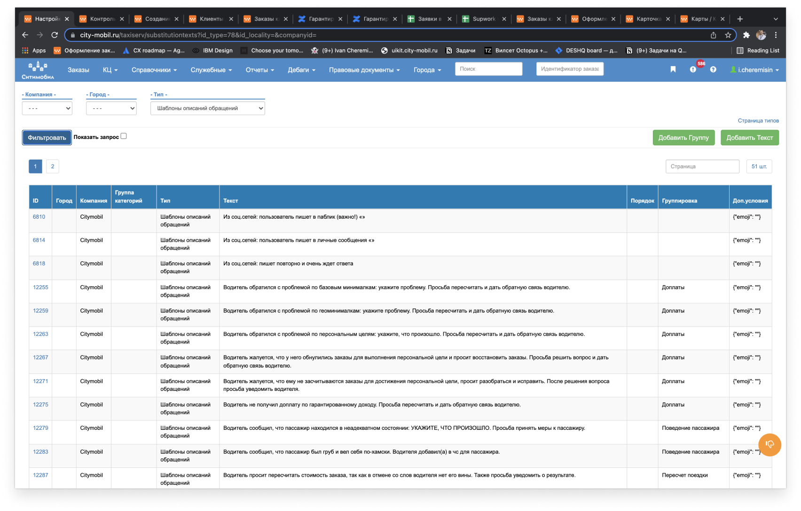
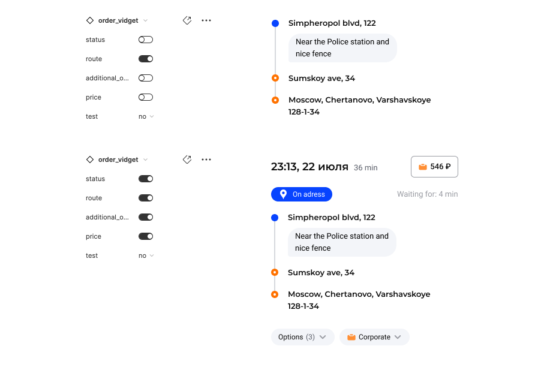
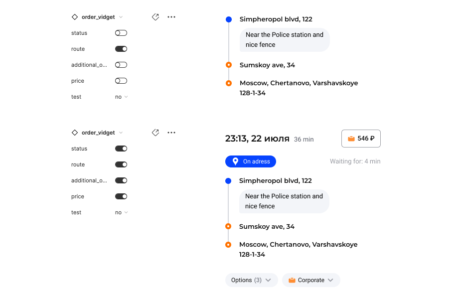

CityMobil
The company is an aggregator with two main types of clients: passengers and drivers. Both have questions about the service. The work of a customer service operator is similar to a detective's and a psychologist's work. We may not always be able to solve problems faster through graphic interface, but we can collect and provide the necessary information to reduce search time.
Tasks
To develop an operator interface for the support service and Provide it for scaling the service to other projects
Evaluating the interface
- Percentage of successfully completed tickets
- Percentage of operators who adapted
- Interaction rate
- Interface clarity and predictability
- Versatility of components

Problem
Drivers and passengers leave and do not return. Customer service is slow and inaccurate. The existing system is not scalable and cannot be reused in other projects.
Plan
I worked as a support operator myself in order to study all the cases and collect the obvious problems, interviewed a group of operators and collected their pains and wishes. It just so happens that there are very different people working as support operators, many of them elderly and everything new is perceived negatively by them. They are ready to fight for the bad, but familiar, there are a lot of such employees, but we also need to work with them. So about 70% of the information from the operators in the initial stages was useless.
Hypothesis
My analysis has shown that the work of the operator is physically in three entities: communication with the client, information retrieval or entering information into the database (for us it's the same, we collect all the information) and the process of problem solving or exeution.
Solution
I built a workspace with three contextual components, as shown in the picture. They are assembled depending on what question the person asked

Before
Operators had to use a kon product for support. It was written by programmers for programmers to simply output data from the API. Operators don't need 90% of that information
But the background information, the answer templates for chats and for calls were collected in scattered files physically on the supervisors' and operators' computers and in Jira's massive documents. There was no single source of truth.
To solve the most common request "payment problem", the operator had to open 13 tabs and spend from 320 seconds.
 

After
Main components
Execution
As soon as a customer contacts support, we create a ticket, with the help of the "execute component" the operator adds attributes to the ticket so that we know what information to show in the "widget component".
When the operator has made a decision, he uses this component to change the status of the ticket.


Main components
Overall Information
In this component, we show general information about the trip, the driver, or the passenger. This component is also collected contextually. Depending on what incoming data we have or what data the operator has chosen.

 

Main components
Widgets
Based on what attributes the operator has chosen in the execution component, we show him the widgets he needs to solve the problem, there can be several of them. In some cases, we know in advance what to show.
The job of a first-line support operator is very similar to a detective job. He or she interviews witnesses and suspects, digs through the archives, and then puts the judgment into action. The widget component is like an elderly lieutenant in the archive department, quickly finding relevant information and sometimes thinking for the detective to make his job easier.


Main components
Chats & calls
The service is omnichannel, the operator can receive calls and chats. It is possible to switch to another line and merge calls.
Chats have the ability to send promo codes, media files and show answer templates.
Gradually we began a transition to a customizable workplace. We started with chats. Because of the specifics of the people we were working with, we couldn't give them complete freedom. So we introduced an invisible grid in which everything lives. Move and change the size of the chat only within this grid. We did not have time to test how customizable widgets work.


Afterwords
In the end, our work space was used by about 600 people across the country and 80 partner companies. The service was sent to many ecosystem companies for development and we saved a lot of money.
I will gladly tell you more in person.
Some statistics
- A team of 26 operators sent us 1800 hours of working procces
- Near 170 interviews
- More than 20 failured hypothesis
- The average time to process an order was reduced from 360 seconds to 76
- 2.949.120.458 pixels